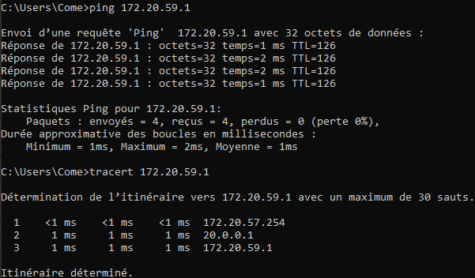

Contexte
Dans le cadre de notre projet de mise en place d'infrastructure réseau, nous avons déployé un VPN IPSEC sur deux routeurs Cisco pour la gestion des appels, avec des fichiers de configuration.
Qu'est ce qu'un VPN IPSEC
Un VPN IPsec (Internet Protocol Security) est une technologie utilisée en entreprise et par les particuliers pour sécuriser les communications sur un réseau IP. Il chiffre les données échangées, garantissant leur confidentialité. L'un des avantages clés d'IPsec est que la connexion reste active et sécurisée en permanence, assurant une communication fiable entre différents sites ou pour les employés à distance. À cela s'ajoute le concept de VPN sur demande, qui établit une connexion sécurisée uniquement lorsque cela est nécessaire, optimisant ainsi les ressources réseau et la sécurité.

Configuration des equipements et tests
Nous avons configuré les equipements sur un fichier packet tracer dans un premier temps afin de se familiariser avec les commandes. Nous avons ensuite mis en place le VPN IPSEC sur deux routeurs Cisco et fait les différents tests necessaires pour assurer la bonne communication en VPN entre les deux routeurs.
|  |